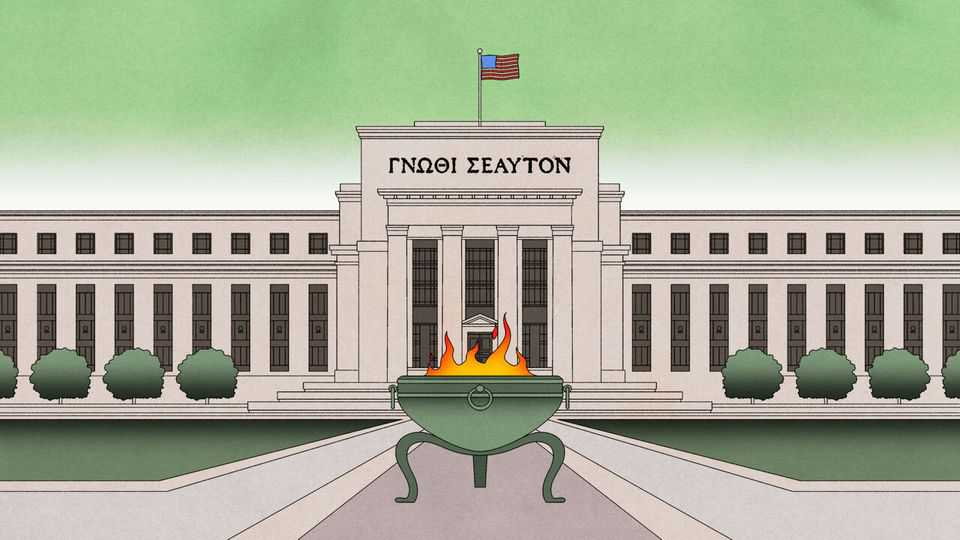

How—and how much—should central banks talk?
The art is to say enough, and no more

Aug 6th 2026
THE ORACLE of Delphi had a gift for being right. Seated in Apollo’s temple, the Pythia delivered her prophecies in riddles. When Croesus, king of Lydia, asked whether he should attack Persia, she replied that he would “destroy a great empire”. So he did: his own. The philosopher Heraclitus described the Delphic method as one that “neither conceals nor reveals, but gives a sign”. Her commanding pronouncements demanded attention; their ambiguity made them almost impossible to prove wrong.
For much of the 20th century central bankers cultivated a similar mystique. Their authority rested on the impression that they were omniscient and omnipotent. Since in truth they were neither, obscurantism was useful. Montagu Norman, governor of the Bank of England from 1920 to 1944, was said to operate by the maxim “never explain, never excuse”. In 1981 Karl Brunner, a Swiss economist, described central banking as thriving on the impression that it was “an esoteric art”. Alan Greenspan, the late former chairman of the Federal Reserve, perfected this art with “Fedspeak”. He had learned, he said, to “mumble with great incoherence”.
Kevin Warsh is trying to restore a little Delphic mystery to the Fed. After his second press conference in late July commentators described his words as “confusing”, “internally contradictory” and “nonsense”. The words are also sparser. Under Mr Warsh, policy statements have shrunk from roughly 340 words to half that or less. “Forward guidance”—language indicating where policy may be headed—has been stripped out. In June he declined to submit his own interest-rate projection and said his colleagues’ forecasts had been written in pencil with “big erasers”. He is also considering fewer policy meetings and press conferences.
Yet Mr Warsh’s tight lips are less radical than they look. Until 1994 the Fed did not even announce its rate decisions; surprise was thought to make policy more effective. Then came a communications revolution. The Fed began to publish its policy “bias”—the likeliest direction of its next decision—in 1999, and to signal the future path of rates in 2003. Michael Woodford of Columbia University provided the theoretical rationale: spending in the economy depends less on today’s overnight interest rate than on the rates people expect in the future. “Not only do expectations about policy matter,” he wrote, “but…very little else matters.”
In the mid-2000s Mervyn King, then governor of the Bank of England (and now co-head of Mr Warsh’s new task-force on the Fed’s comms strategy), called this the “Maradona theory” of interest rates. During his famous run against England, the Argentine footballer moved almost in a straight line while defenders veered aside, expecting him to turn. Central banks could do the same. In 2002 the Bank of England did not change its policy rate, yet expectations of future rates shifted with the economic outlook and helped stabilise spending. The monetary-policy framework was “doing the work for us”, said Lord King.
After the global financial crisis of 2007-09 central banks went further. With policy rates already near zero, they emphasised that they expected rates to stay low even after the economy began to recover. In 2011 the Fed suggested it would keep rates near zero until at least mid-2013; the next year it began publishing officials’ rate projections as dots. Although it was still Delphically non-committal, markets heard this as an Odysseus-like pledge by the central bankers to bind themselves to lower rates for longer. Whether any central bank would truly tie itself to the mast is doubtful; but the theory, as told by Paul Krugman, who won the Nobel prize in 2008, was to “credibly promise to be irresponsible”.
More explicit central-bank language made markets hypersensitive to any change in wording. It also boxed in policymakers. In 2013 Mark Carney, Lord King’s successor at the Bank of England, said that higher rates would not be considered until unemployment fell at least to 7%. The threshold was crossed far sooner than expected, forcing Mr Carney to clarify his guidance.
Since prediction is hard, especially about the future, central bankers strive to explain how they would respond to events without prejudging what events will occur. The Bank of England has long wrapped its forecasts in error bars; in April it replaced a single central forecast with three scenarios. Yet when the scenarios repeatedly miss, the elaborate display of uncertainty can start to erode credibility, not protect it. The Fed overcommunicated in a different way in 2020 and 2021. It called inflation “transitory” and promised not to raise rates until employment had fully recovered and inflation exceeded 2% “for some time”. The guidance anchored market expectations—but tied the Fed to an outlook that was fast becoming obsolete. Rates stayed too low for too long.
Mr Warsh’s instinct to say less is understandable in light of such failures. It starts from humility. The Fed is not all-knowing and the price-discovering financial markets are, in his words, a “very accomplished economist”. But prices, in this case, are not signals from the gods. They reflect guesses about what the Fed will do—plus, for now, a risk premium on Mr Warsh’s untested stewardship.
And humble speech is not enough to impress markets. Above all, the speaker needs to be trusted. In the 1990s investors believed Robert Rubin when as treasury secretary he stated that “A strong dollar is in our national interest.” In 2012 they grasped that the European Central Bank under Mario Draghi really would do “whatever it takes” to save the euro. It was Messrs Rubin’s and Draghi’s hard-won credibility that made these oracular economic speech acts, conveying resolve without specifying the means, so powerful. By stressing how little the Fed understands, Mr Warsh may be making himself—and the Fed—less credible. For an oracle, it is not enough to know thyself.■